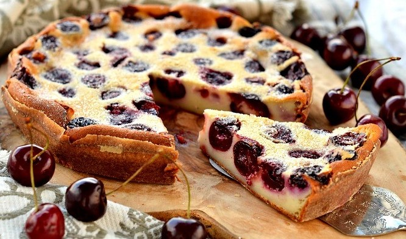

Clafoutis is a rustic French dessert with a custard-like base, traditionally filled with whole, pitted cherries. This simple yet elegant treat is celebrated for its comforting texture and balance of flavors.
History of Clafoutis
Clafoutis originated in the Limousin region of France in the 19th century. Traditionally made with black cherries, it was a popular dessert among farmers due to its ease of preparation and the abundance of cherries in the region. The dessert's name comes from the Occitan word clafir, which means “to fill,” referring to how the batter surrounds and "fills" the cherries. Though the classic version uses cherries, Clafoutis can also be made with other fruits like plums, berries, or apples; however, strictly speaking, these variations are called flaugnarde rather than Clafoutis.
Clafoutis Recipe

Ingredients
1 lb (450 g) cherries (preferably black cherries, fresh or frozen, and pitted)
1 cup (240 ml) whole milk
1/2 cup (120 ml) heavy cream
3 large eggs
1/2 cup (100 g) granulated sugar
1/2 cup (60 g) all-purpose flour
1 tsp vanilla extract
1/4 tsp almond extract (optional, for a hint of almond flavor)
A pinch of salt
Powdered sugar for dusting
Instructions
Prepare the Cherries and Preheat the Oven:
Preheat your oven to 350°F (175°C). Grease a 9-inch (23 cm) baking dish or a pie plate.
If using fresh cherries, pit them. Scatter the cherries evenly in the bottom of the prepared baking dish.
Make the Batter:
In a large mixing bowl, whisk together the eggs and sugar until well combined and slightly frothy.
Add the flour and a pinch of salt, then whisk until smooth.
Gradually add the milk, heavy cream, vanilla extract, and almond extract (if using), and whisk until the batter is smooth and has a consistency similar to pancake batter.
Assemble and Bake:
Pour the batter over the cherries, ensuring they are evenly distributed.
Bake for 35-40 minutes, or until the Clafoutis is puffed, golden, and set in the center (a toothpick should come out clean).
Serve:
Allow the Clafoutis to cool slightly. Dust with powdered sugar before serving. It’s delicious warm, at room temperature, or even chilled.
Tips for Making Perfect Clafoutis
Use the Right Fruit:
Traditionally, Clafoutis is made with cherries, but it’s versatile. When using other fruits, ensure they’re not too watery, as this can make the Clafoutis soggy. Firm, ripe fruits work best.
Consider Pitting the Cherries:
While traditional recipes often leave cherries unpitted for a hint of almond flavor, it’s generally more convenient to pit them for easier eating. Pitted cherries also release more juice, giving a richer flavor.
Custard Consistency:
Clafoutis batter should be smooth and slightly runny, similar to crepe batter. Whisk gently to avoid overworking the flour, which can make the Clafoutis dense.
Room Temperature Ingredients:
Using room-temperature eggs and milk helps the batter mix smoothly and cook evenly.
Dusting with Powdered Sugar:
A light dusting of powdered sugar right before serving adds a touch of sweetness and gives it a lovely finish.
Serve Fresh:
Clafoutis is best served fresh and warm. As it cools, it will deflate slightly, which is normal. If making it ahead, consider warming it up slightly before serving.
Avoid Overbaking:
Keep an eye on the Clafoutis as it bakes. It should be slightly golden and set, but overbaking can cause it to become dry.
Experiment with Flavorings:
A few drops of almond extract enhance the traditional flavor, while a splash of liqueur (like Kirsch or Amaretto) can add depth. Just be careful not to overpower the fresh fruit flavor.